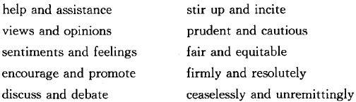
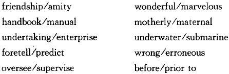

One of the distinguishing characteristics of Chinglish is the constant use of two words so close in meaning that one would do. The pairs can be nouns, verbs, adjectives, or adverbs:

This sort of duplication is apparently acceptable in Chinese. It may even be necessary—to avoid ambiguity, to reinforce meaning, to provide balance and symmetry, or just to satisfy the ear. But as we saw in the preceding chapter, the presence of two words in Chinese is never in itself a sufficient justification for using two words in an English translation.
Confronted with a pair of English words in a draft translation, whether your own or someone else's, you must decide whether both are needed to convey the meaning of the Chinese. The temptation is to retain both words, on the grounds that they do not mean exactly the same thing. But no two words in English ever do mean exactly the same thing.
For historical reasons, and because of its innumerable borrowings from other languages, English has an exceedingly rich vocabulary. That is, it contains many words that are nearly synonymous. Some pairs in which the two words are drawn from separate language streams (the first having Germanic roots, the second Latin) may appear to be exact equivalents. Consider, for example:

Yet even in these pairs whose dictionary definitions are for practical purposes identical, subtle distinctions can be made. The words have acquired different connotations and associations and have come to be used in different contexts. "Foretell" has an aura of mystery and prophecy that is lacking in the scientific "predict.""Erroneous" carries none of the moral condemnation that can be expressed by "wrong."
So the question for the translator is not: Is there a difference between these two words? There is always a difference. The right question is: In this particular context, is the difference important? In other words: Does the second word add anything significant to the first? Is a second word necessary to express some element in the Chinese that one alone does not convey? If the answer is no, you have identified an example of what may be called "redundant twins."
In most instances, the best way to deal with redundant twins is simply to delete one of them . (And, as we have seen in preceding chapters, whenever unnecessary words are removed, the statement gains in clarity and force. ) For example, "geographical surveys and explorations" can be reduced to "geographical surveys" without loss of meaning. Cadres who are urged to be "attentive and meticulous in their work" will not grow careless if they are asked only to be "meticulous in their work."
At other times, it is preferable to replace both members of the pair with a new word that expresses the thought better than either of the original two. For example, "faraway, distant areas" could be described as "remote."And instead of calling upon people to "be alert and wake up," you could call upon them to "rouse themselves."
Occasionally, it turns out that neither of these operations—deleting one twin or replacing both—produces an adequate version, one that covers all the sense of the original Chinese. This suggests that two or more words really are needed in English, but the translator has selected the wrong ones. He or she has tried to condense too much meaning into two words that cannot convey it and has unwittingly produced redundant twins instead.
The best solution in such a case may be to add a word or two that will clarify the intended meaning of one or both terms. Depending on context, of course, "conditions and environment" might be changed to "working conditions and social environment." "Reconnaissance and investigation" might be expanded to "military reconnaissance and investigation among the people."
When the attempt at clarification is successful, the new version matches the full sense of the original and incidentally, by differentiating between the two words used in English, eliminates the redundancy as well. When you "spell out" the meaning in this way, however, you are making explicit in English something that may be only implicit in Chinese. For this reason, there is always the danger of mistranslation—that is, of misunderstanding the original and of introducing into the English version a meaning that is not present or intended in the Chinese. You should think hard before adding the explanatory words.
It is useful to distinguish three types of redundant twins, the first of which is by far the most common:
1. a pair of words in which the meaning of one is virtually the same as that of the other
2. a pair in which the meaning of one is contained in or implied by the other
3. a pair in which the meaning of one is so vague and general that it cannot be differentiated from the other
Following are examples of each type, with appropriate revisions.
1. Meaning of one is virtually the same as that of the other
A: this is the only road leading to affluence and prosperity
B: this is the only road to prosperity
A: although the road before us is rough and bumpy , we believe that the favorable situation will continue
B: although the road before us is rough, we believe that the favorable situation will continue
A: a country that wants to develop needs to pay close attention to maintaining extensive international contacts and dealings with all kinds of people
B: a country that wants to develop needs to maintain extensive international contacts with all kinds of people
[Review : "Pay close attention to" is one of the unnec. introductory verb + noun phrases.]
A: even if problems do emerge, they can be easily corrected or solved
B: even if problems do emerge, they can be easily solved
From the leaflet of a silk store in Beijing:
A: our store also accepts orders for blouses, shirts, pajamas... etc., the sewing work being fine and excellent
B: our store also accepts orders for blouses, shirts, pajamas... etc., all of which are finely sewn
2. Meaning of one is contained in or implied by the other
A: representatives in the Sino-British talks failed to reach an agreement, despite the Chinese side's best and thorough efforts toward that end
B: representatives in the Sino-British talks failed to reach an agreement, despite the best efforts of the Chinese side
["Best" contains the sense of "thorough."("Toward that end" is self-evident. )]
A: biographical background data on cadres should be correctly evaluated and comprehended
B: biographical background data on cadres should be correctly evaluated
[You can't evaluate something correctly if you haven't understood it; "evaluated" implies "comprehended.”]
A: the present boom of foreign investment in China has prompted the country to consider and eventually work out ways to use such investment more efficiently
B: the present boom of foreign investment in China has prompted the country to work out ways to use such investment more efficiently
[Again, you can't determine what measures to take without studying possible alternatives; "considered" is implicitly contained in "work out.”]
A: the Chinese Foreign Ministry spokesman called the decision "yet another attempt by British Hong Kong authorities to interfere with and undermine the Sino-British talks"
B: the Chinese Foreign Ministry spokesman called the decision "yet another attempt by British Hong Kong authorities to undermine the Sino-British talks"
[To "undermine talks" is to "interfere with" them in a particularly damaging way.]
A: the KMT government arbitrarily arrested, imprisoned, and executed workers, students, and other patriotic democrats and promulgated and implemented a series of reactionary laws and decrees
B: the KMT government arbitrarily arrested, imprisoned, and executed workers, students, and other patriotic democrats and promulgated a series of reactionary laws and decrees
["Promulgated" implies "implemented."Unless there is a statement to the contrary, it can be assumed that once a law has been publicized it is put into effect.]
3. Meaning of one is so vague and general that it cannot be differentiated from the other
A: So long as the two sides work together, bilateral relations will continue to grow and develop further.
B: So long as the two sides work together, bilateral relations will continue to grow (or: expand).
[-"Develop" is too imprecise to add anything to the meaning of "grow."
-(Review : The sense of "further" is already expressed in "continue to.")]
A: the editorial said that the working class should help to further and develop production and concentrate their efforts on economic development
B: the editorial said that the working class should help expand production and concentrate (its efforts) on economic development
["Develop" production is passable, but the more concrete "expand" is preferable, especially in the same sentence with "development.""Further" is so broad in meaning that it cannot be distinguished from either "develop" or "expand."]
A: the editorial also calls for strengthening and building the Party
B: the editorial also calls for strengthening and expanding the Party
[Here both words are vague and general, so it is hard to see a difference in meaning. If, however, "building" is used in the sense of expanding the membership, it is better to use the more precise word.]
A: we should strengthen and improve the system under which governments at all levels are responsible for attaining given objectives for birth control
B: we should strengthen the system under which governments at all levels are responsible for attaining given objectives for birth control
[Again, since neither word conveys a particular action, they seem to mean the same thing: to "strengthen" a system is to "improve" it. If the original Chinese suggests two different meanings, the translator has to find more specific words in English to convey them.]
A: effective guidance by the government is especially important for a healthy and rational development of this industry in a socialist market economy
B: governmental guidance is especially important for the rational development of this industry in a socialist market economy
[-"Healthy" is so vague a metaphor that it can add nothing to "rational," which itself is open to broad interpretation.
-(Review : "Effective" is an unnec. intensifier. )]
That redundant twins do proliferate in Chinglish is evident to anyone who reads attentively even a single page of unedited copy. The following are examples that have appeared, some of them many times, either in print or in draft translations from which they were later eliminated.
Category 1 (meaning the same)
Nouns :
discussions and deliberations
skills and abilities
setbacks and defeats
errors and mistakes
practices and customs
troubles and problems
trials and tests
paths and routes
divisions and splits
functions and responsibilities
shortcomings and weaknesses
consciousness and awareness
forecasts and predictions
shrinkage or decrease
steps and measures
instructions and commands
plots and intrigues
complaints and dissatisfactions
disputes and dissension
restrictions and shackles
Verbs :
consider and study
endorse and support
introduce and put into effect (measures)
(dikes) give way and collapse
triumph and overcome
defeat and overthrow
flee and retreat
unmasked and revealed
absorbing and incorporating
following and putting into effect (advice)
Adjectives :
strong and solid
weak and faint
firm and staunch
upright and honest
experienced and seasoned
irresolute and hesitant
major and important
trivial and insignificant
accurate or precise (statistics)
short and brief
Adverbs :
correctly and properly
wholly and completely
conscientiously and painstakingly
vividly and dramatically
earnestly and sincerely
Category 2 (meaning contained or implied)
accusations and attacks
corruption and degeneration
wise and sensible
appropriate and advisable
firm and unshakable
precious and useful
necessary and imperative
unprecedented and unique
forward-looking and far-sighted
mentally and ideologically (confused)
Category 3 (meaning vague or general)
the situation and circumstances
the conditions and situation
advances and developments
enhance and improve
healthy and sound
Hundreds more could be added to the list.
Despite the abundance of examples in which a pair of words represents an unnecessary duplication, it cannot be assumed that every two-word combination is objectionable.
It would be understandable if, confronted with a seemingly endless parade of redundant twins marching hand in hand down page after page, an exasperated polisher were to begin automatically striking out one word of every pair encountered. But that would be no more justifiable than letting every pair stand. Each case must be considered on its merits.
As stated at the outset, the question is: Is there a significant difference between the two words, and are both needed to express the sense of the Chinese? Unfortunately, the answer is not always obvious. The same two words may be needed in one context and not in another, the Chinese text may be open to different interpretations, and often there is room for disagreement.
When, on reflection, you cannot make a sure judgment about a given pair of words (or find a better version), it is probably advisable to retain both. Especially if you are dealing with a government document or an official statement that will be closely examined by foreign readers, it is generally better to risk including a redundancy than to risk losing an element of the intended sense. As Sol Adler [p. 27] rightly said with regard to the English translation of Volume V of the Selected Works of Mao Zedong, "meaning must have priority over elegance."
Here are a few instances in which, after some debate, the polishers decided that both words were justified and should be retained (or replaced by two preferable ones):
A: "Trade unions should voice their opinions and demands in time and truly protect their legitimate rights and interests ," the President said.
B: "Trade unions should voice their opinions and demands in time and protect their legitimate rights and interests," the President said.
[-Significant distinctions can be made between the members of each pair.
-(Review : "Truly" is an unnec. intensifier. )]
A: Party leader Jiang Zemin has urged the nation to grasp and implement Deng Xiaoping's recent remarks on reform
B: Party leader Jiang Zemin has urged the nation to understand and apply Deng Xiaoping's recent remarks on reform
[The two words clearly represent different ideas. The problem is that they are ill chosen. The "collocations" are wrong: one can grasp an idea and implement a policy, but one can neither grasp nor implement a remark.]
A: China is of special importance to the world and is related to the stability and security of the international situation
B: China is of special importance: what happens in China can affect world stability and security
[-It was felt here that neither "stability" nor "security" alone would suffice to convey the sense of the Chinese.
-("To the world" was judged unnec. and eliminated, along with "the international situation," both expressions being reduced to the single adjective "world.")
-(The vague "China is related to" was changed to the precise "what happens in China can affect," which the polishers understood to be the intended meaning. )]
A: The session examined and adopted the "Decision of the CPC on . . ."It also discussed and approved the report on...
B: At this session the Central Committee examined and adopted the "Decision of the CPC on . . ."It also discussed and approved the report on...
[-It might be argued that a committee always examines a decision before adopting it and discusses a report before approving it, so that in each pair of words the second implies the first. But the polishers (one native speaker of each language) decided that neither in China nor in western countries could this be taken for granted, so in each expression both words were retained.
-(The sentence was, however, revised to make the Central Committee the subject. It is the committee, not the session—which is literally a "sitting" of the committee—that makes decisions. Cf. Chapter II, page 62, exercise 17, and Key, page 529. )]
A: the cause of our Party has enjoyed the support and assistance of progressive people and friendly countries throughout the world
B: the cause of our Party has enjoyed the support and assistance of progressive people and friendly countries throughout the world
[-Here the polishers were reluctant to suppress either element. They speculated that there was an intended distinction in the Chinese between moral support and tangible assistance. They felt, however, that if they made that meaning explicit they would be adding too much of their own interpretation to the original. They were being particularly conservative because the phrase appeared in a speech delivered by a senior Party leader at a national Party congress.
-Working on another text, the same two polishers might have been less cautious. For example, had they been asked to review the China Daily editorial that stated, "with the assistance and support of the central government, Tibet has made great strides," they would no doubt have treated the words as simple redundant twins and eliminated one or the other.]
It should be noted that the impulse to employ redundant twins is by no means limited to Chinese translators. Native speakers of English, if they do not pay attention to what they are saying—or if they affect a pretentious style—readily succumb to it.
Thus, a U. S. trade representative is quoted as saying that a plan announced by the Japanese government is both "significant and historic ."The trustees of a great hospital write that they will "promote the vigorous scrutiny and speedy resolution of any issues or problems identified in the realm of patient care" and that they will "strengthen and enhance emotional support for patients and their families."A large real estate agency offers to its "clients and customers ," for their "benefit and knowledge ," documents designed to "inform and explain the process of purchasing property in Hawaii."
Indeed, some redundant twins have been seen together in public so often that they have gained a kind of respectability. They include such expressions as:
And so on and so forth. Some of these pairs, like those in the left-hand column, have a jaunty alliteration or rhyme that may make them tolerable in a humorous context. Others, like "null and void," "each and every," "without let or hindrance," "aid and abet," and many others, were originally legal terms and are still deemed useful by lawyers. But with these exceptions, the professional guardians of the English language—teachers, writers, and editors—reject them as pointless duplications.
Meanwhile, however, the vast majority of the population—the casual speakers and writers who neither notice nor care that there is no significant difference between the two elements in these tired formulas—cheerfully continue to use them.
The result is that such common redundancies inevitably come to sound familiar and hence acceptable. They exert an influence not only on native speakers of English (including foreign polishers) but on Chinese translators as well, reinforcing the habits of their own language. No doubt this influence contributes to the abundance of twins in Chinglish.
As in the previous chapters, the words under particular consideration—here, redundant twins—are underlined, the revised versions are italicized, and the changes are explained in brackets. Also as before, comments about material already covered or about incidental points appear in parentheses.
1) A: While deepening reform and quickening the pace of economic development, we should strengthen efforts to build a clean and honest government.
B: While deepening reform and accelerating economic development, we should strengthen efforts to build a clean government.
[-"Clean" is a familiar metaphor for "honest."It needs no second word to make its meaning plain.
-(Review : The sense of "pace" is included in "quickening." Both were replaced by "accelerating.")]
2) A: Not everything that can be done in one country can be done in another. We must define our system and management methods in light of China's actual conditions and characteristics .
B: Not everything that can be done in one country can be done in another. We must determine our system and management methods in light of our own conditions.
[-The "characteristics" of China (its huge population, shortage of arable land, etc. ) cannot be distinguished from its "conditions."
-(Review : "Actual" is an unnec. intensifier. As for "China's," it is clear from context that what the speaker means is the particular conditions in China, hence "our own" conditions. )]
3) A: Once the new leading group is established, you must be responsible for everything—that is, for your mistakes, merits and contributions .
B: Once the new leading group is established, you must be responsible for everything—that is, for your mistakes and for your achievements.
[-The polisher felt that "merits" and "contributions" were too close in meaning for both to be needed here.
-Moreover, the three terms "mistakes," "merits," and "contributions" were not of the same order. One could make mistakes or contributions, but "merits" were qualities; they would not be opposed to "mistakes" but rather to "defects" or "failings."Of the two twins, she therefore dropped "merits."
-Then, thinking that "mistakes" and "contributions" were not entirely parallel either, she substituted "achievements."]
4) A: With the support and promotion of Deng Xiaoping, the Central Committee of the Party and the State Council ratified the program in November of the same year.
B: With the support of Deng Xiaoping, the Central Committee of the Party and the State Council ratified the program in November of the same year.
[-In this context, there is no significant difference between "support" and "promotion."
-Moreover, the phrase "with the support and promotion of Deng Xiaoping" is ambiguous at best. On first reading, the reader might well understand not that Deng was urging ratification but that he enjoyed wide support and had therefore been promoted to a higher post.]
5) A: we should eliminate all factors that hinder or oppose our socialist cause or which might lead to unrest and turmoil
B: we should eliminate all factors that impede our progress toward socialism or that might lead to unrest and turmoil
[-"Hinder" a cause is dubious. In careful English, what is "hindered" (= delayed, hampered, obstructed, etc. ) is not the cause itself but the progress or success or advancement of the cause. Also, it is people—not abstract "factors," which can take no action—who "oppose" (= resist, combat) a cause.
-Thus, in the revised version both words were abandoned for a clearer and less questionable expression, "impede our progress toward."
-This version, however, may have been faulty. It is possible that in the Chinese phrase that the translator rendered by the redundant twins "hinder and oppose," the second term was meant to be stronger than the first, just as "turmoil" is stronger than "unrest."If so, a better solution would have been "all factors that impede or block our progress toward socialism."]
6) A: as victory [in the war with Japan] drew near, the Chinese people were presented with the choice of two possible destinies or prospects
B: as victory drew near, the Chinese people were presented with a choice between two different visions of the future
[Another instance where a different and more idiomatic expression can be substituted for redundant twins.]
7) A: Once this point is made clear, it will help us understand the nature of problems and learn experience and lessons .
B: Once this point is made clear, it will help us understand the nature of problems and learn from experience.
[-If the distinction suggested in the Chinese is between successes and failures, we might say, "and learn from both positive and negative experience."
-(Incidentally, you cannot "learn" experience in English. You can gain it, acquire it, or learn something from it. )]
8) A: The comrades concerned should look at the influence and effect that their wrong words and actions, pernicious writings, and cheap performances have on young people and others.
B: The comrades concerned should look at the influence that their wrong words and actions, pernicious writings, and cheap performances have on young people and others.
[-Presumably, the influence is the effect.
-If "effect" is intended to convey a separate meaning, that would have to be spelled out: "... should look at the influence that their wrong words and actions, pernicious writings, and cheap performances have on young people and others and at the consequences of that influence."]
9) A: we also adopted the Seventh Five-Year Plan, which is designed to create the necessary conditions for China's prolonged, stable, and sustained development in this century and the next
B: we also adopted the Seventh Five-Year Plan, which is designed to create the necessary conditions for prolonged, stable development in this century and the next
[-The Plan was adopted in 1986, fourteen years before the end of the century. Clearly, development that was to continue "in this century and the next" would be "prolonged" as well as "sustained."It could therefore be argued that these are redundant triplets and that "stable" alone would suffice.
-(Review : In this context, "China's" is obvious. )]
10) A: further efforts should be made to choose and promote young people to leadership
B: more young people should be promoted to positions of leadership
[-Choosing people to be promoted is part of the promotion process.
-(Review : "Efforts should be made to" is only a variation of "make great efforts to," one of the superfluous introductory formulas discussed in Chapter I. )]
11) A: the Communists in any country should consider and settle the question of the revolutionary road by themselves
B: the Communists in any country should settle the question of the revolutionary road by themselves
[If they settle the question, they have necessarily considered it.]
12) A: we must carefully study and ascertain better ways to implement the policy of combining education with productive labor
B: we must ascertain (or: find) better ways to implement the policy of combining education with productive labor
[-Plainly, if we are to find better ways we have to study possible ones and choose among them: "ascertain" implies "study."
-(Review : "Carefully" can be taken for granted: anything that has to be studied should be studied carefully. )]
13) A: we must give full attention to the study and adoption of policies that will...
B: we must formulate policies that will...
[-Adopting a policy usually implies that you have studied it first. But the pair of words can be neatly replaced here by "formulate," which suggests the meaning of both.
-(Review : "Give full attention to," a variation on "pay attention to," is another of the classic empty introductions. )]
14) A: administrative departments for industry and commerce and courts at all levels are authorized to investigate, handle, and hear cases of trademark counterfeiting and infringement
B: administrative departments for industry and commerce and courts at all levels are authorized to investigate and hear cases of trademark counterfeiting
[-"Handling" a case includes investigating the facts and hearing testimony and argument. Better to use the more specific words and simply omit the general one.
-"Counterfeiting" a trademark is an "infringement" of the trademark laws. If "infringement" here is meant to refer to other possible violations, we would have to say: "cases of counterfeiting and other infringements of trademark laws."]
15) A: Official statistics show that by the end of 1991 individual savings and deposits amounted to 911 billion yuan ($167. 16 billion).
B: Official statistics show that by the end of 1991 individual savings amounted to ￥911 billion ($167. 16 billion).
[-From the point of view of the bank, "savings" = "deposits."
-If a distinction was intended between the two words, we would have to study the Chinese, in context, to determine what was meant and then clarify the meaning in English. Possibly: "personal savings and institutional deposits."
-(Since we don't spell out "dollars," it is better to be consistent and use the symbol for "yuan" as well. )]
16) A: To bring about sustained, rapid, and sound development of the national economy, all localities and departments should, proceeding from the overall interests, make rational arrangements in order of importance and urgency to use financial and material resources first in....
B: To bring about sustained, rapid, and sound development of the economy, all local authorities and all departments should make rational arrangements for the use of financial and material resources. Projects to be supported should be selected in the order of priority, based on the overall national interest. First should come....
[-A project would scarcely be considered urgent if it were not important: "urgency" includes the sense of "importance."But here we can substitute for both twins a single word, "priority," that perfectly expresses the intended meaning.
-(The long sentence was broken into three parts so that the reader would not have too many ideas to absorb all at once. )
-(The order of ideas was changed in the interest of logic and clarity. )]
17) A: Wen also called for work to introduce and improve a system under which the State will be able to back, guarantee , control, and serve agricultural production
B: Wen also called for the introduction of a system under which the State would support, control, and serve agricultural production
[-Although "introduce" does not always imply "improve," we can take it for granted that once the system is in place, its defects should be corrected.
-In a socialist society, any new measure should be first proposed, then studied, then introduced, then improved, then gradually perfected (or abandoned, if it ceases to be useful)—we don't have to rehearse the entire process every time a new idea is put forward.
-As for "back" and "guarantee," they seem to be true redundant twins. If not, the ideas they represent need to be stated more explicitly. It is hard to know how the state can "guarantee" agricultural production other than by supporting it.
-(Review : In the first clause "work" was eliminated as an unnec. noun. "Called for work to introduce" means no more than "called for the introduction of.")]
18) A: There are three important criteria for judging the soundness of a country's political system and structure and the policies it has adopted.
B: There are three important criteria for judging the soundness of a country's political system and the policies it has adopted.
[Two all-embracing words that in this context can hardly be differentiated. Using both only invites the reader to puzzle over the distinction between "system" and "structure," instead of quickly grasping the real distinction, which is between "system" and "policies."]
19) Subtitle in a government report:
A: Further rationalizing price relations and fostering and developing a market system.
B: Further rationalizing price relations and developing a market system.
[The meaning of both words is so general that neither adds anything perceptible to the other.]
20) A: we should draw up correct development and construction plans for all these zones
B: we should draw up correct (or, better: sound) development plans for all these zones
[-Two more large abstractions that are plainly used here to mean the same thing.
-(To avoid using the noun "development" as an adjective, we could say: "we should draw up correct plans for the development of all these zones."That would be the simplest, most natural word order in English. )]
1) Since the publication of China's Automotive Industrial Policy last July, the "family car" has been one of the hottest topics of discussion and debate in the Chinese press.
2) the drafting of important documents or reports [for the National People's Congress] has been finalized or completed ahead of schedule
3) we should strengthen and improve the overall balance of the national economy
4) this will convince the people that you are sincerely and wholeheartedly carrying out the policies of reform and opening to the outside world
5) in the final analysis, the growth and expansion of the CPC, China's achievement of national independence, and her advance toward strength and prosperity were closely linked to the drive to liberate and develop the forces of production
6) The last decade of this century will be the key to laying a foundation and creating good conditions and environment for economic development in the first half of the next century.
7) as long as the ranks of the Party forge the closest unity and are vigorous and vital, the cause of socialism will grow and flourish
8) if the reform is successful, it will lay a solid foundation for sustained and stable development in China over the next few decades
9) political reform aims at improving and revitalizing China's socialist system
10) actually, as means or methods adopted in developing the social productive forces, different managerial forms can serve both capitalism and socialism
11) when we have dealt with those problems, our established principles and policies will only be carried out more smoothly, steadily, and perseveringly
12) What problems or obstacles are we going to run into? As I see it, there are two or three problems that might hold up the growth of our economy....
13) Mou Xinsheng, Vice-Minister of Public Security, urged public security organs to support and closely cooperate with banks in cracking down on white-collar crime.
14) Leading comrades of Party committees and governments at all levels should often visit schools, listen to the opinions and voice of the teachers and students, and help them overcome their anxieties and difficulties.
15) We are not rich and cannot offer you much financial help, but we can tell our friends our experiences and lessons, which is also a kind of help.
16) It was then that Mao Zedong showed his distinguished ability to draw experience and lessons from practice.
17) So China must not allow itself to get out of control; we have that responsibility to ourselves and also to the whole world and mankind.
18) We must therefore continue to uphold Mao Zedong Thought and enrich and develop it with new principles and new conclusions corresponding to reality.
19) Of course, the report reflects my views and opinions, but chiefly collective opinions.
20) After years of consideration and study, the State Bureau of Cultural Relics has agreed to unearth the much-talked-about No. 2 vault of terra-cotta soldiers, Yuan Zhongyi, President of the Terra-cotta Museum, said recently at Lintong, where the museum is located.